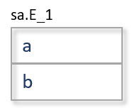

These macros are usable only in the context of the script generation in Forward Engineering and Alter Script.
This section contains the following topics
Description
This macro registers an Entity or Attribute object for the Data Preservation mechanism. The context object is added in the Data Preservation objects list. For the context object, data is prepared in the background to be displayed in the Data Preservation Options dialog.
Prototype
FE::ActivateDataPreservation
Result
The macro will fail if:
Deprecation Level
Active
Breaking Changes
None
Categories
Sample
Template
[IsAlterScriptX
/* Add this entity in the data preservation list. */
[ActivateDataPreservation]
…
]
Result
The entity's data will now be preserved across the alter process.
Description
This macro inserts a bucket identification token into the script. This token is interpreted by the script processing engine for sorting purposes and then removed. See the document, Editing Forward Engineering Templates.pdf, for a complete description of buckets.
Prototype
FE::Bucket( BucketNumber )
|
Parameter |
Status |
Description |
|
BucketNumber |
Req |
The bucket number. |
Result
This macro will fail if:
Deprecation Level
Active
Breaking Changes
None
Categories
Sample
Template
FE::Bucket("90")
…
Result
There will be no visible effect in the script generated by the FE engine, as the bucket tokens are stripped out of the final output. If a template is expanded outside of the FE engine, the output will appear as follows, where �90� is the bucket number.
@@*B=90B*@@
Description
This macro is used to get a specific user selection from the Data Preservation Options dialog. The Data Preservation is enabled when there is a drop and re-create of an entity for the Alter Scripts.
The list of options that can be tested is found in the following table.
WhereClause
Evaluates to the state of the user-specified "Where Condition".
DropTempTable
Evaluates to the state of the "Drop Temp Table" check box.
PreserveData
Evaluates to the inverse value of �Do NOT Preserve Data� check box.
IsDropRecreate
Evaluates to the value of �Force DROP/re-CREATE Table� check box.
IsAlterRequired
Evaluates to the inverse value of �Force DROP/re-CREATE Table� check box.
RegisterEntity
This option sets the template flag indicating that the query is generated to transfer the data from the temp table to the new modified table.
Prototype
FE::DataPreservationOption( OptionName )
|
Parameter |
Status |
Description |
|
OptionName |
Req |
The name of the option. |
Result
See the above table for explanations of return values.
Deprecation Level
Active
Breaking Changes
None
Categories
Sample
Description
This emits the erwin Data Modeler-generated triggers for the context entity.
Prototype
FE::EmitERwinGeneratedTriggers
Result
This macro will fail if:
Deprecation Level
Active
Breaking Changes
None
Categories
Sample
Template
FE::EmitERwinGeneratedTriggers
Result
create procedure erwin_raise_except(err int,msg varchar(255))
raise exception err,0,msg;
end procedure;
CREATE TRIGGER tD_E_1 DELETE ON E_1
…etc.
Description
This macro inserts an end-of-statement token into the script. This token is interpreted by the script processing engine and then removed. This should not be confused with macros like %DBMSDelim that insert end of statement delimiters interpreted by the database.
Prototype
FE::EndOfStatement
Result
This macro always succeeds.
Deprecation Level
Active
Breaking Changes
None
Categories
Sample
Template
FE::EndOfStatement
Result
There will be no visible effect in the script generated by the FE engine, as the end of statement markers are stripped out of the final output. If a template is expanded outside of the FE engine, the output will appear as follows.
@@*EOS*@@
Description
This macro succeeds if the process running the script is Alter Script Generation.
Prototype
FE::IsAlterScriptGeneration
Result
This macro will fail in the following circumstances:
Deprecation Level
Active
Breaking Changes
None
Categories
Sample
Template
[ FE:: IsAlterScriptGeneration
/* Generate alter script-specific stuff */
]
Result
The Alter Script-specific template will be emitted.
Description
This macro succeeds if current context object is located in the Referenced_Entities_Ref property of the current Subject_Area.
Prototype
FE::IsAlterScriptGeneration
Result
This macro will fail in the following circumstances:
Deprecation Level
Active
Breaking Changes
None
Categories
Sample
Template
[ FE::IsEntityInSubjectArea
/* Only do this if the entity is in the current subject area */
]
Description
This predicate is used by Alter Script processing to determine if the insertion of columns can be done with an ALTER statement, or if the table must be dropped and recreated.
It determines if new Attribute objects have been added to the Entity object owning the Attribute object that is the current context object during the current session.
If new Attribute objects were added, then the macro checks if subsequent Attribute objects were also newly added. The current FE Option Set is used to determine what ordering is being used.
If no Attribute objects were added, the macro returns tests if the current context is the last Attribute based on the settings of the current FE Option Set.
Prototype
FE::IsLastColumn
Result
This macro will fail in the following circumstances:
Deprecation Level
Active
Breaking Changes
None
Categories
Sample
Template
[FE::IsLastColumn
/* We can use ALTER, so emit construct the statement */
"ALTER TABLE " …
]
Result
This particular clause will be emitted.
Description
This macro succeeds functions as does the IsModified macro, except that properties not represented in the database are not considered when testing for modifications.
Prototype
FE::IsModified
Result
This macro will fail in the following circumstances:
Deprecation Level
Active
Breaking Changes
None
Categories
Sample
The following block will only execute if the object is modified in a database property other than comment.
Template
FE::IsModified("Comment")
Description
This macro succeeds if the process running the script is Schema Generation.
Prototype
FE::IsSchemaGeneration
Result
This macro will fail in the following circumstances:
Deprecation Level
Active
Breaking Changes
None
Categories
Sample
Template
[ FE::IsSchemaGeneration
/* Generate forward engineering script-specific stuff */
]
Result
The Forward Engineering-specific template will be emitted.
Description
This macro is used by the Alter Script mechanism for databases that allow the creation of a column in the middle of a table. It evaluates to the name of the next pre-existing Attribute object after a newly-created Attribute. The current FE Option Set is used to determine the sort order.
Prototype
FE::NextExistingColumn
Result
This macro will fail in the following circumstances:
Deprecation Level
Active
Breaking Changes
None
Categories
Sample
Template
…
"ALTER TABLE "
…
["\r\n" "BEFORE " FE::NextExistingColumn]
…
Result
This particular clause will be emitted.
Description
This predicate tests whether the specified option is turned on in the current FE Option Set.
The list of options that can be tested is found in the following table. For a description of what these options control, consult the Help system for the Forward Engineering dialogs.
AKConstraintInAlter AKConstraintInCreate
AlterStatements CachedView
CachedViewCreateFunction CachedViewCreateFunctionSynonym
CachedViewCreateMacro CachedViewCreateOption
CachedViewCreateProcedure CachedViewCreateProcedureSynonym
CachedViewCreateSynonym CachedViewCreateTrigger
CachedViewDropFunction CachedViewDropFunctionSynonym
CachedViewDropMacro CachedViewDropOption
CachedViewDropProcedure CachedViewDropProcedureSynonym
CachedViewDropSynonym CachedViewDropTrigger
CachedViewLOBStorage CachedViewPartitions
CachedViewPhysicalStorage CachedViewPostScript
CachedViewPreScript CachedViewUsingIndexStorage
Column ColumnCheckConstraint
ColumnCompress ColumnCreatePrivilege
ColumnDefaultValue ColumnLabel
ColumnLOBStorage ColumnLogicalName
ColumnPhysicalOrder ColumnTitle
ColumnUseDomain Comments
ConstraintFormat ConstraintName
ConstraintState Create
Create CreateAggregate
CreateAKIndex CreateApplicationRole
CreateAssembly CreateAssemblySynonym
CreateAsymmetricKey CreateAuthorization
CreateBufferpool CreateCachedView
CreateCachedViewAlternateKeyIndex CreateCachedViewIndexOption
CreateCachedViewIndexPartitions CreateCachedViewIndexPhysicalStorage
CreateCachedViewInversionEntryIndex CreateCast
CreateCertificate CreateCluster
CreateClusterIndex CreateClusterIndexPhysicalStorage
CreateCollection CreateCredential
CreateDatabase CreateDatabaseLink
CreateDatabasePrivilege CreateDatabaseRole
CreateDatabaseTrigger CreateDBPrivilege
CreateDefault CreateDirectory
CreateDiskgroup CreateDomain
CreateFKConstraint CreateFKIndex
CreateFulltextCatalog CreateFulltextIndex
CreateFunctionSynonym CreateHashIndex
CreateIEIndex CreateIndex
CreateIndexOption CreateLibrary
CreateLocation CreateLogin
CreateMethod CreateNodegroup
CreateOrdering CreatePackage
CreatePackageContext CreatePackageSynonym
CreatePartitionFunction CreatePartitionScheme
CreatePKConstraint CreatePKIndex
CreateProfile CreateReplicationGroup
CreateRole CreateRollbackSeg
CreateRule CreateSchema
CreateSchemaPrivilege CreateSegment
CreateSequence CreateServerTrigger
CreateStogroup CreateSymmetricKey
CreateSynonym CreateTable
CreateTablespace CreateTransform
CreateUniqueConstraint CreateUserDefinedType
CreateUserId CreateView
CreateViewIndex CreateViewIndexAK
CreateViewIndexClustered CreateViewIndexIE
CreateViewIndexPhysicalStorage CreateViewPrivilege
CreateXMLIndex CreateXMLSchemaCollection
DeleteRelation DoNotUseODBC
Drop DropAggregate
DropAggregateSynonym DropAKIndex
DropApplicationRole DropAssembly
DropAssemblySynonym DropAsymmetricKey
DropAuthorization DropCachedView
DropCachedViewAlternateKeyIndex DropCachedViewIndex
DropCachedViewInversionEntryIndex DropCast
DropCertificate DropCluster
DropClusterIndex DropCredential
DropDatabase DropDatabaseLink
DropDatabaseRole DropDatabaseTrigger
DropDefault DropDirectory
DropDiskgroup DropFKIndex
DropFulltextCatalog DropFulltextIndex
DropFunctionSynonym DropHashIndex
DropIEIndex DropIndex
DropIndexOption DropLibrary
DropLogin DropMethod
DropOrdering DropPackage
DropPackageContext DropPackageSynonym
DropPartitionFunction DropPartitionScheme
DropPKIndex DropProfile
DropReplicationGroup DropRole
DropRollbackSeg DropRule
DropSchema DropSequence
DropServerTrigger DropSymmetricKey
DropSynonym DropTable
DropTablespace DropTransform
DropUserDefinedType DropUserId
DropView DropViewIndex
DropViewIndexAK DropViewIndexIE
DropXMLIndex DropXMLSchemaCollection
ErwinExceptions ERwinGeneratedTrigger
FKConstraintInAlter FKConstraintInCreate
GeneratedTriggerRelationshipOverride GeneratedTriggerRITypeOverride
GenerateRI GenerateUserDefinedTrigger
Include IncludeMDXIndex
IncludeNDXIndex Index
IndexClustered IndexPartitions
IndexPhysicalStorage LabelPKIndex
LastOption MaterializedViewLog
MaterializedViewLogCreateOption MaterializedViewLogDropOption
MaterializedViewLogPartitions MaterializedViewLogPhysicalStorage
ModelCreateFunction ModelCreateMacro
ModelCreateProcedure ModelCreateProcedureSynonym
ModelCreateSynonym ModelDropFunction
ModelDropMacro ModelDropProcedure
ModelDropProcedureSynonym ModelDropSynonym
ModelOption ModelPostScript
ModelPreScript NoCarraigeReturn
ODBC OnDeleteFKConstraint
OnUpdateFKConstraint OtherOptions
OtherOptionsDatabase OtherOptionsSchema
OtherOptionsUserDefinedProperties OverrideOwnerAll
OverrideOwnerAuthorization OverrideOwnerCachedView
OverrideOwnerDatabase OverrideOwnerDefault
OverrideOwnerDomain OverrideOwnerEntity
OverrideOwnerFunction OverrideOwnerKeyGroup
OverrideOwnerMacro OverrideOwnerOracleCluster
OverrideOwnerOracleClusterIndex OverrideOwnerOracleLibrary
OverrideOwnerOraclePackage OverrideOwnerSequence
OverrideOwnerSQLServerAggregate OverrideOwnerSQLServerApplicationRole
OverrideOwnerSQLServerXMLSchemaCollection OverrideOwnerStoredProcedure
OverrideOwnerSynonym OverrideOwnerTrigger
OverrideOwnerValidationRule OverrideOwnerView
PKConstraintInAlter PKConstraintInCreate
QuoteName RefrentialIntegrity
RunCheckModel SchemaCreateOption
SchemaDropOption Security
SequenceCreateSynonym SequenceDropSynonym
SPCreateFKConstraint SPCreatePKConstraint
SpecifyOwner Storage
StorageCreateOption StorageDropOption
StripDelimiter SuppressParameterNames
SuppressPrimaryIndexName SuppressSecondaryIndexNames
TabCheck Table
TableCheckConstraint TableCreateFunction
TableCreateFunctionSynonym TableCreateMacro
TableCreateMaterializedViewLog TableCreateOption
TableCreatePrivilege TableCreateProcedure
TableCreateProcedureSynonym TableCreateSynonym
TableCreateTrigger TableDropFunction
TableDropFunctionSynonym TableDropMacro
TableDropMaterializedViewLog TableDropOption
TableDropProcedure TableDropProcedureSynonym
TableDropSynonym TableDropTrigger
TablePartitions TablePhysicalStorage
TablePostScript TablePreScript
Trigger TriggerCreateOption
TriggerDropOption UseODBC
UserTriggerRelationshipOverride UserTriggerRITypeOverride
View ViewCreateFunction
ViewCreateFunctionSynonym ViewCreateMacro
ViewCreateOption ViewCreateProcedureSynonym
ViewCreateStoredProcedure ViewCreateSynonym
ViewCreateTrigger ViewDropFunction
ViewDropFunctionSynonym ViewDropMacro
ViewDropOption ViewDropProcedureSynonym
ViewDropStoredProcedure ViewDropSynonym
ViewDropTrigger ViewPostScript
ViewPreScript WrapText
Prototype
FE::Option( OptionName )
|
Parameter |
Status |
Description |
|
OptionName |
Req |
The name of the option. |
Result
This macro will fail in the following circumstances:
Deprecation Level
Active
Breaking Changes
None
Categories
Sample
Template
/* Are we generating in physical order? */
[OptionX("ColumnPhysicalOrder")
ForEachReference("Physical_Columns_Order_Ref")
{
Execute("Column Properties")
}
]
Result
The code for generating the columns in physical order will be emitted if you have selected this option.
Description
This macro evaluates to the appropriate Owner Override value specified in the Forward Engineering dialog.
Prototype
FE::OwnerOverride( [DefaultToModel [, OwnerLevels]] )
DefaultToModel
If this value is set to �true� and no owner override is specified in the Forward Engineering dialog, then the value found in the DB Owner property of the object will be used.
OwnerLevels
If this is specified, the value will be determined for the owning object this number of levels above the current context object.
Result
This macro will fail in the following circumstances:
Deprecation Level
Active
Breaking Changes
None
Categories
Sample
Assume the following table is the current context object. The first example results show what would emit if an owner override of �sa2� was in place. The second example results show what would emit if no owner override was in place.

Template
[FE::OwnerOverride "."] Property("Physical_Name") "\n"
[FE::OwnerOverride("true") "."] Property("Physical_Name") "\n�
ForEachOwnee("Attribute")
{
ListSeparator("\n")
FE::OwnerOverride("true�, "1") "." OwnerProperty("Physical_Name")
"." Property("Physical_Name�)
}
Result � Example #1
sa2.E_1
sa2.E_1
sa2.E_1.a
sa2.E_1.b
Result � Example #2
E_1
sa.E_1
sa.E_1.a
sa.E_1.b
Description
This macro inserts an FE Record Alter token into the script. This token is interpreted by the script processing engine when creating Alter scripts. Some changes to a model object can be handled by an ALTER statement, while other changes require the corresponding database object to be dropped and recreated. If a change of the first type is processed before a change of the second type, a redundant ALTER statement is generated. To counter this, all ALTER statements are tagged using this macro. When the FE engine processes the script, it examines the entire state of the object and, if another change forces the drop/recreate, eliminates the ALTER statement. These tags are removed from the final script.
Prototype
FE::RecordAlter
Result
This macro always succeeds.
Deprecation Level
Active
Breaking Changes
None
Categories
Sample
Template
FE::RecordAlter
…
Result
There will be no visible effect in the script generated by the FE engine, as the alter script tokens are stripped out of the final output. If a template is expanded outside of the FE engine, the output will appear as follows, where �189� is an object�s id.
@@*A=189A*@@
Description
This macro will attempt to set a global flag that is a concatenation of the context object�s id, the label �Create�and the context object�s type name. The macro will fail if this flag is already set. The flag indicates that the object has been created, which allows the post processing to test for and remove any alter statements which may have been generated for the object.
Prototype
FE::RecordCreate
Result
This macro will fail in the following circumstances:
Deprecation Level
Active
Breaking Changes
None
Categories
Forward Engineering Macros
Sample
Template
FE::RecordCreate
…
Result
No visible result.
Description
This macro inserts an FE Execute Command token into the script. This token is interpreted by the script processing engine when working against a 4GL such as Access or FoxPro in order to construct the commands to modify the database objects via the 4GL's API.
Prototype
FE::SchemaExecCommand( CommandString )
|
Parameter |
Status |
Description |
|
CommandString |
Req |
The command string to embed. |
Result
This macro always succeeds.
Deprecation Level
Active
Breaking Changes
None
Categories
Sample
Template
FE::SchemaExecCommand("Create Access Field Start")
Result
There will be no visible effect in the script generated by the FE engine, as the schema execution tokens are stripped out of the final output. If a template is expanded outside of the FE engine, the output will appear as follows.
@@*SECreate Access Field StartSE*@@
Description
This evaluates to the name of the temporary table that the Data Preservation option of Alter Script has created.
Prototype
FE::TempTable
Result
This macro will fail in the following circumstances:
Deprecation Level
Active
Breaking Changes
None
Categories
Sample
Template
…
"INSERT INTO " …
…
" SELECT " …
…
" FROM " TempTable
[" WHERE " DataPreservationOptions("WhereClause")]